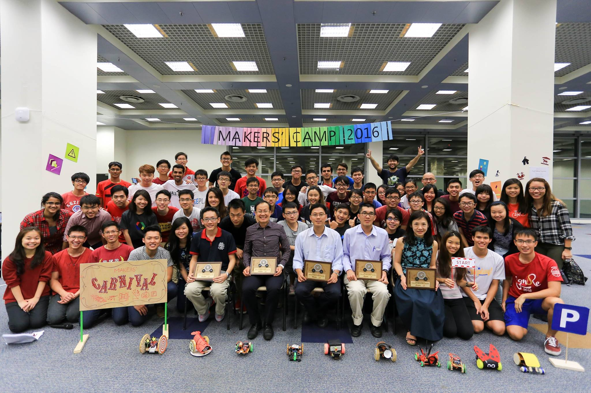
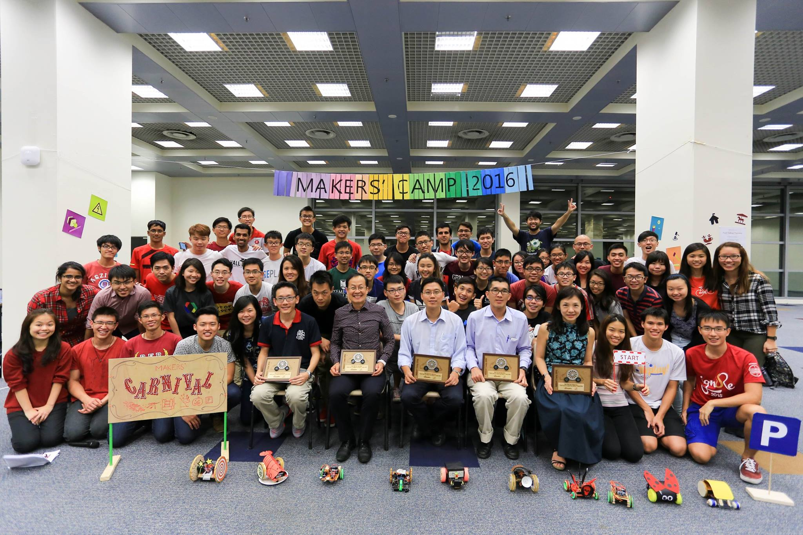
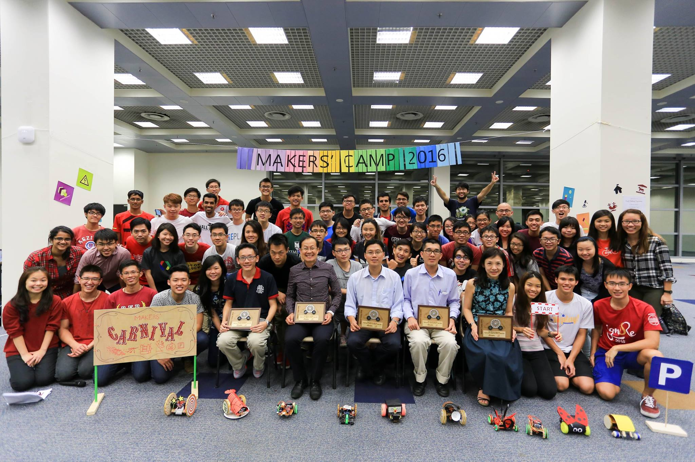

Hello! I am May Lim.A Tech Enthusiast and Evangelist
I Code
When I built my first app 5 years ago, I went, "wow so I haven't studied in vain for the last 15 years". After years of mindlessly chasing grades, I could finally see and feel the real impact that I could make on the world. I let my imagination run wild ever since.
I live by a quote from my then-senior in Red Cross, "the more you give, the more you receive". And after years of practicing it, I can't agree more. Take the case of education - I learn a little, I share my learnings, and in the process I learn much more. Sharing is inspiring, empowering and educational to both the provider and the audience.
Communication is the key to people's hearts and minds. Anyone can communicate, but not many can communicate well. Design to me is the ability to empathize with my audience, then write, speak and show in ways that enter their hearts and minds.
Technology, as much as I love it, is a messy ball of wires. It's complicated (and keeps changing), which sometimes turn people off. I want to help change that. I believe good design in writing and visuals can bridge the gap to people's hearts and minds.
Hello! My name is May Lim and I am a programmer by training. Though I love coding (see them projects above), I always felt that something was missing.
Thankfully, I encountered various opportunities to be exposed to the explosion of technology in business and the society, which intrigues and excites me all the time. I knew I want to play a part in bringing the intersection of people and technology forward.
How do I plan to do it? Having founded a Tech startup and worked on many Tech projects, I know the gap isn't in the state of technology. It's the people. It's the fear and uncertainty and ignorance that people have towards technology that is limiting the possibilities ahead.
I want to spread the awareness and excitement around, and I think this is what completes the picture for me (and the world).
GeoHackathon 2015
Our team of 5 developed and pitched a game - National Conquest (iOS app and web app) - to gamify the hunt for AEDs around Singapore. This game raises awareness and prepares the public for emergencies in case of cardiac arrests.
I took charge of developing the web app for users to monitor the progress of the game. The app is a full Geographical Information System (GIS) stack - using PostGIS (database), QGIS (processing), GeoServer (server-side), OpenLayers (client-side) and Google Maps (APIs). This stack is a spin-off from my Final Year Project at NTU.
We were awarded Challenge Winner for the theme provided by Singapore Civil Defence Force.
Organizer:
Singapore Land Authority
Date:
Dec 2015
MHA S.A.F.E. Competition
Our team of 6 developed and pitched an unmanned firefighting robot - Red Hound (Raspberry Pi with various sensors/actuators and web app) - to support firefighters in their work.
I took charge of software development for the web app to obtain and process the data input from sensors (infrared camera, temperature sensor) and the web interface (for navigation and voice recording), then transmit output to actuators (motors for movement, speakers). I also supported the electronics side to work on the Raspberry Pi.
Our team of 3 developed a mobile app solution - FoodBasket (Android app) - to tackle food wastage.
I took charge of software design and development for the Android app, including technical feasibility of the system. We pitched our idea to a panel with Shell's senior management representatives for the Global Finals (top 5 teams) in the Netherlands.
We were awarded Global Champions out of a total 1,000+ entries from 55 countries. We were honored to receive the award from Shell's CEO Ben van Beurden.
Our team of 5 developed an e-commerce web app - 3Dified - as a marketplace for 3D-printing designs.
I supported with backend and database development on PHP and MySQL. I also took charge of crafting and leading the pitch.
We were awarded Best Pitch.
Organizer:
IEEE NTU Student Branch (Singapore)
Date:
Oct 2014
RasPi Innovation Challenge
Our team of 4 developed an unmanned navigating robot - RasPikachu (Raspberry Pi with actuators and web app) - to allow prospective home buyers to remotely tour and view homes on sale.
I supported with software development to obtain user input from web app and deliver output to the actuators (motors for movement).
We were awarded Merit Award.
Organizer:
Garage@EEE, NTU (Singapore)
Date:
Sep - Nov 2015
UBS Group Technology Case Study Challenge
The case involved an arbitrary trading platform. Our team of 3 developed a proposal to replace its legacy application technology with a web-based solution. Our documentation and presentation covered the business benefits, design and implementation. We also evaluated the use of open source components, and security/cost trade-offs.
I took charge of the backend design (servers and databases) as part of our proposed software architecture.
We were awarded Second Prize out of more than 30 entries.
Organizer:
UBS Group Technology (Singapore)
Date:
Jul - Aug 2014
Entrepreneurship Panel Discussion
Entrepreneurship has been a hot topic in Singapore in recent years. Our government, schools and various communities are advocating the spirit of entrepreneurship to Singaporeans of all age. Yet, not many know the what exactly make up the lives of entrepreneurs.
In this panel discussion with secondary school students, myself and two other young entrepreneurs shared about our journeys as entrepreneurs. We hoped to give these students a clearer picture so that those who get inspired would take a step further into entrepreneurship, while those who weren't keen would at least realize why it's a no-go for them.
Organizer:
EDGE startup community
Date:
Jun 2017
Panel Discussion on Graduate Employment Trends
Research showed that graduates in Singapore took a longer time to land full-time jobs in 2016, as compared to previous years. Could it be due to the rise in startups?
In this panel discussion on national TV, myself (as a recent graduate who co-founded a company) and a HR expert from SHRI shared about the possible reasons behind this trend. We discussed based on our observations and understanding of the changing employment landscape in Singapore.
Organizer:
Mediacorp Channel 8 (Singapore)
Date:
Feb 2017
App Prototyping Workshop

Makers' Lab organized our inaugural Makers' Camp in 2016. As part of a 2-day camp, about 40 NTU engineering students went through 4 different workshops to learn and build their own remotely-controlled car from scratch! Main components involved: Android phone (remote app for navigation) and Arduino (controls the car).
I took charge of designing and and conducting one of the workshops as a trainer. It was an app prototyping workshop that taught participants an overview of app prototyping as well as how to build a hybrid app using web languages (HTML, CSS, Javascript) to run on Android phones.
Organizer:
Makers' Lab, NTU (Singapore)
Date:
Jan 2016
Azure Workshop
Cloud computing is gaining popularity among businesses. It is increasingly important for IT students to be equipped with knowledge (and preferably skills) on cloud computing.
As part of my Technical Evangelist internship with Microsoft (evangelizing Azure to developers), I co-organized and delivered a talk about Azure to about 20 NTU students. The topic was Azure as "The Cloud for Modern Applications", to which I also showcased an Azure-IoT app that I built during my internship. The app is a smart lock that can be remotely controlled over the Internet.
Organizers:
Microsoft Student Partners
Garage@EEE, NTU (Singapore)
Date:
Aug 2015
Demo of Azure-IoT App That I Built
Cloud computing and Internet-of-Things (IoT) are hot topics of the last decade in the Technology space. Microsoft, being one of the top few cloud vendors today, is no stranger to these technologies.
As part of my Technical Evangelist internship with Microsoft (evangelizing Azure), I built an Azure-IoT app and demonstrated it to the public during an external Microsoft Singapore event at JTC Launchpad @ one-north. The app is a smart lock that can be remotely controlled over the Internet.
Organizer:
Microsoft Singapore
Date:
Jul 2015
IoT-Raspberry Pi Workshop
Internet-of-Things (IoT) is gaining popularity among makers and hobbyists, largely due to the recent influx of affordable microelectronics such as Arduino (microcontroller) and Raspberry Pi (microprocessor).
As part of Makers' Lab external outreach, I co-organized and delivered a talk about IoT to the public at Maker Faire Singapore. The topic was about using Raspberry Pi in IoT projects, to which we also demonstrated an IoT-RasPi app that we built. The app is a smart lock that can be remotely controlled over the Internet.
We also showcased our app at a booth during the 2-day event, which was graced by then-Education Minister Heng Swee Keat.
Organizer:
Maker Faire Singapore
Date:
Jul 2015
HTML vs. CSS vs. Javascript
We always here these three terms being thrown around when creating websites, but for beginners to web languages, the differences may not always be obvious.
I created this infographic to quickly explain to beginners what these three languages are - especially useful as an intro slide for my web app workshops because the visual helps them understand almost instantly.
(free to share and adapt with attribution, even commercially)
Public Key Encryption with Example
I really enjoyed my Computer Security class at UC Berkeley. I used to receive security prompts from my web browser while surfing the Internet, but had no idea what they meant ("This website's certificate cannot be verified". Whattt?). But during the class, it felt so gratifying to finally understand what encryption, digital certificates and etc. do to protect my Internet activity.
To help myself retain this awesome knowledge (in case my future self forgets some stuff) and also to help others understand and appreciate encryption better, I created this infographic to visually explain what public key encryption means with a commonly seen example - logging in to your Amazon account.
(free to share and adapt with attribution, even commercially)
Example Data Model for Graph Databases
When I interned at Neo4j in 2014, graph database was up-and-coming in the industry. But it was new and foreign, especially to people outside the NoSQL field, so public awareness and education were necessary.
I created this infographic to help people quickly understand what a data model might look like for a graph database, with a familiar example - movies, genre and people.
(free to share and adapt with attribution, even commercially)
Public Key Cryptography Visualized
I really enjoyed my Computer Security class at UC Berkeley. It felt so gratifying to finally understand what cryptography, encryption, digital certificates and etc. do to protect my Internet activity. Plus, I really think cryptography is one of the most elegant technique ever developed and practiced to solve the crazy problems in securing our massively growing Internet.
To help myself retain this awesome knowledge (in case my future self forgets some stuff) and also to help others understand and appreciate cryptography better, I created this infographic to visually explain what public key cryptography means.
(free to share and adapt with attribution, even commercially)
A Typical Web Stack
During my internship at Neo4j in 2014, I was tasked to build a full-stack web app (I had to use the graph database). Although a very simple web stack, I took awhile to pick up everything from graph database to web browsers. There was a lot of technical knowledge and it wasn't easy to convey what I did to others.
Hence, I created this infographic to help others quickly understand my work on a macro-level.
(free to share and adapt with attribution, even commercially)
Example Big Data Architecture
As a Marketing and Communications Manager at Neuro10 (a network analytics platform using AI and big data), my job was to ensure that our audiences understand our product with little effort, even non-technical people.
One of the things I did was to create infographics, including this one, to visually explain our work. These visuals appeal well, capture attention and help our audience understand complex concepts better.


 
